Les écrans à choisir
FPLS, 19 novembre 2026. Ce sont des maquettes : rien n’est encore changé dans l’application pour ces écrans. Données fictives.
Ce qu’il faut me dire
- « Aujourd’hui » : A, B ou C. Exemple de réponse : Aujourd’hui : A
- « Paramètres du cabinet », l’équipe : A ou B. Exemple : Paramètres : B
- Et, si tu veux, une remarque sur n’importe quelle image. Rien d’autre n’attend ta réponse : le reste (en bas de page) est déjà en cours.
1. « Aujourd’hui » : le premier écran du poste
Le problème aujourd’hui : on ouvre FPLS et on voit quatre grandes cartes de chiffres avant ce qu’il faut faire. Les 4 urgences sont en bas, et il faut 10 clics pour les traiter. Les trois versions corrigent ça, chacune à sa manière.
La liste d’abord Mon conseil
En haut, les chiffres tiennent sur une seule ligne. Dessous, à gauche, les urgences ; à droite, la décision de celle qu’on a touchée, sans changer de page. On traite tout depuis cet écran.
- On voit toutes les urgences d’un coup, et on agit sans quitter la page.
- Les chiffres restent, en plus petit.
- L’écran est plus dense que B.
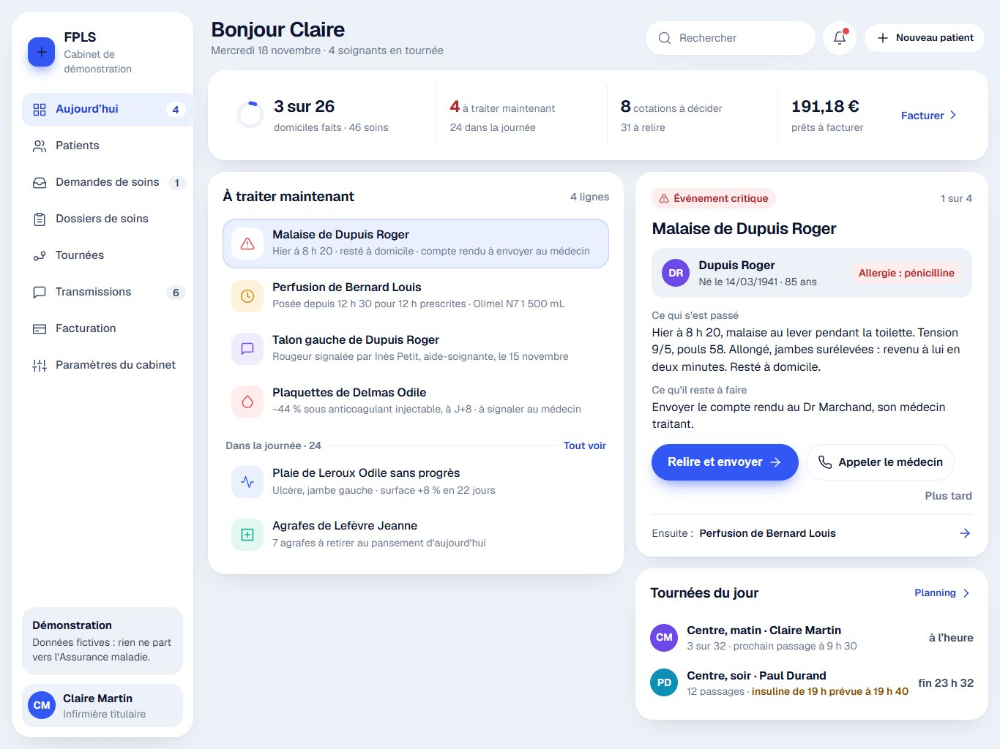
Une chose à la fois
L’urgence du moment prend tout le haut de l’écran, en grand, avec son bouton. Les trois suivantes attendent dans une petite colonne à droite. On les traite l’une après l’autre.
- Impossible de se tromper sur ce qu’il faut faire maintenant.
- Très lisible sur l’iPad.
- On voit moins de choses d’un coup.
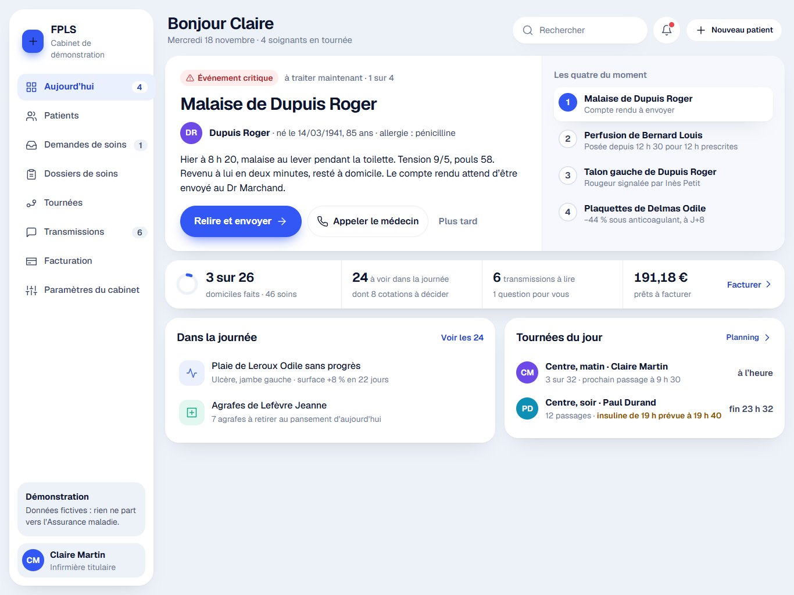
La journée en trois colonnes
Trois colonnes qui répondent à trois questions : qu’est-ce qui presse ?, où en sont les tournées ?, que reste-t-il à faire ce soir ? Chaque ligne a son bouton.
- Toute la journée d’un regard, matin comme soir.
- Plus de boutons à l’écran ; les cartes de chiffres disparaissent.
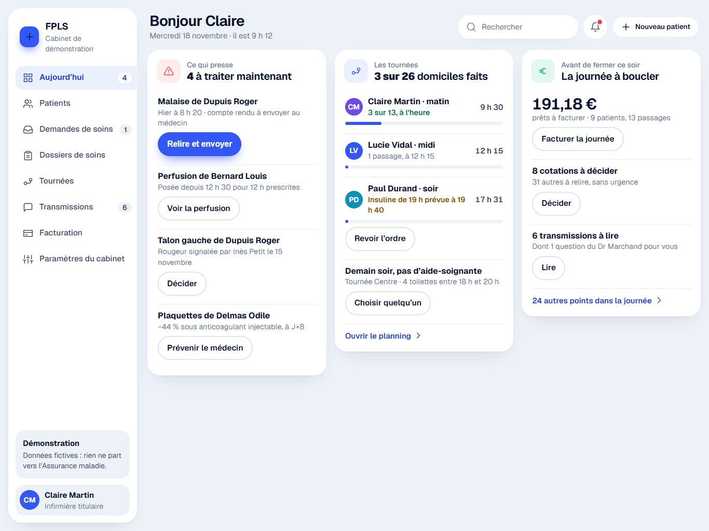
2. « Paramètres du cabinet » : refait en profondeur
Ce qui change dans les deux versions, d’après tes retours et ceux de Giovanni :
- Cinq rubriques en haut, chacune avec son état : le cabinet, l’équipe, les appareils, les règles, les données.
- La pratique avancée (IPA) se coche directement sur la ligne de l’infirmier, plus au fond de sa fiche.
- Les droits de chacun se cochent un par un, avec la date et qui les a changés. Le tableau « Détail des droits », qui ne se modifie pas, quitte l’équipe et va dans l’aide.
- Les formations se cochent : PRADO (ouvre la facturation du suivi PRADO), PCA, cathéter périnerveux (tracées seulement).
- Plusieurs appareils par personne (téléphone et tablette). À côté de « Bloquer » : « Déconnecter » et « Mettre en pause » (réparation, remplaçante absente), puis « Remettre en service » ou « Relier à nouveau ».
- La liste de tous les appareils n’existe qu’à un endroit, pour les responsables. Dans l’équipe, chacun montre juste un résumé (« 2 reliés »).
- Chaque option du cabinet dit ce qu’elle change, et une bulle « i » explique chaque mot qui peut poser question.
L’équipe en tableau
Une ligne par personne : IPA, appareils, droits. On touche une ligne, sa fiche s’ouvre à droite pour tout régler.
- Toute l’équipe sur un écran, même à dix personnes.
- Plus « tableau », moins chaleureux.
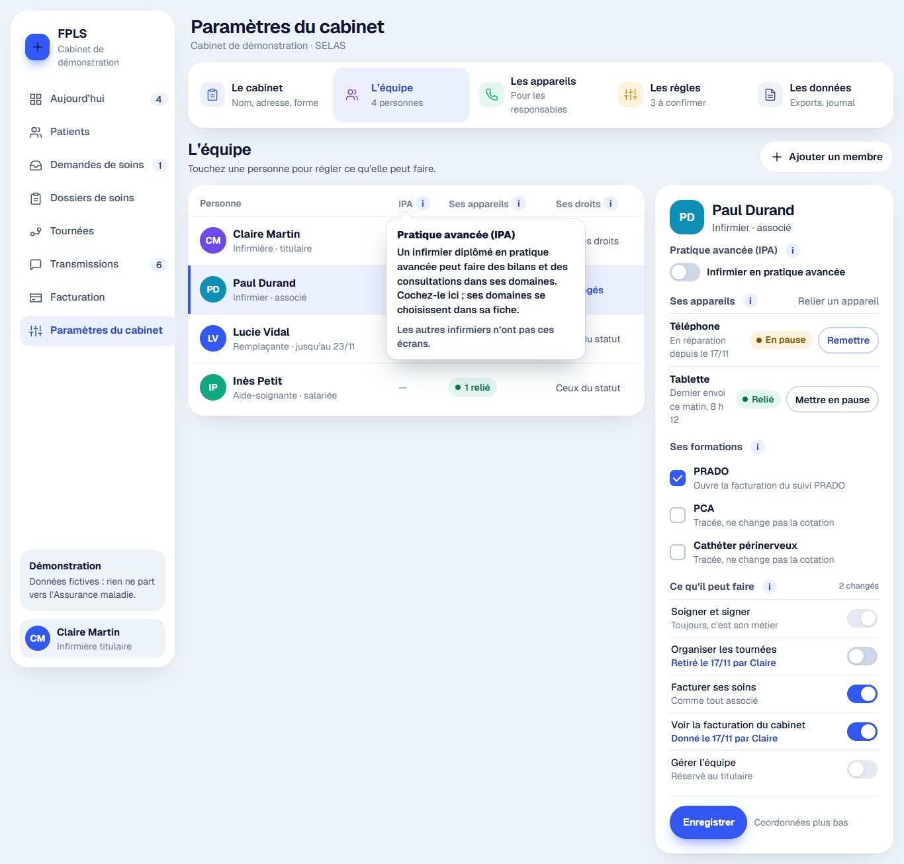
Une carte par personne
Chaque membre a sa carte : IPA, appareils, droits. On touche une carte, la même fiche s’ouvre à droite.
- Très lisible au doigt, chacun est bien distinct.
- Au-delà de six personnes, il faut faire défiler.
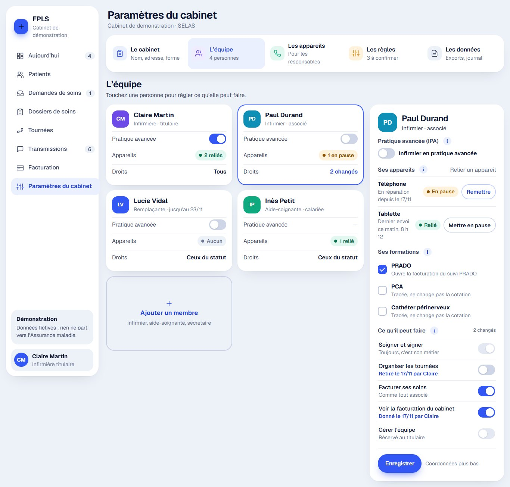
Le cabinet et ses options
Cochez seulement ce qui existe chez vous ; chaque ligne dit ce qu’elle change. Bulle ouverte en exemple sur « aides-soignantes salariées ».
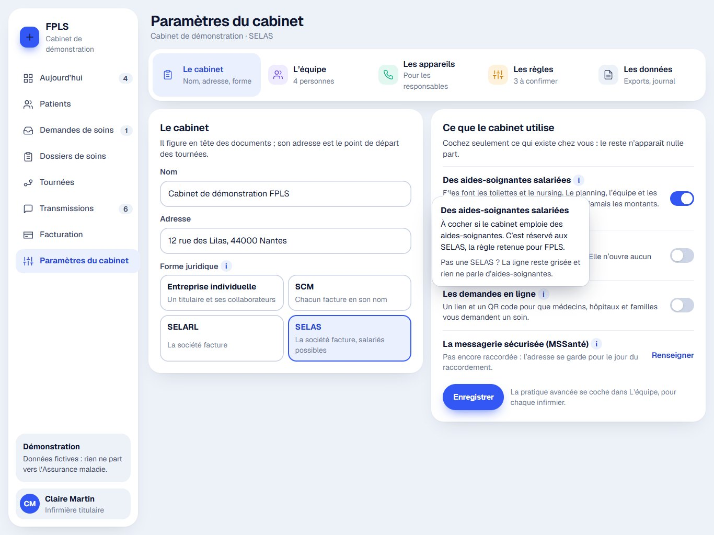
Les appareils (pour les responsables)
Chaque appareil a un état et ses gestes à côté : Déconnecter, Mettre en pause, Bloquer, Remettre en service, Relier à nouveau.
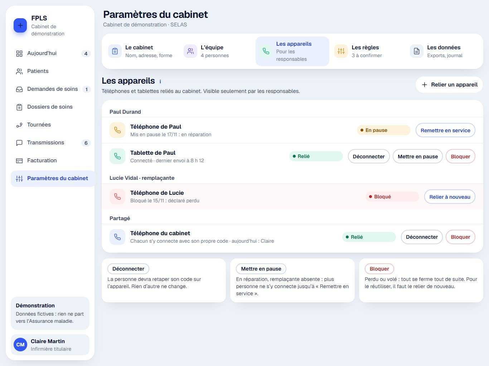
Voir l’écran actuel de l’équipe (version 0.39), pour comparer
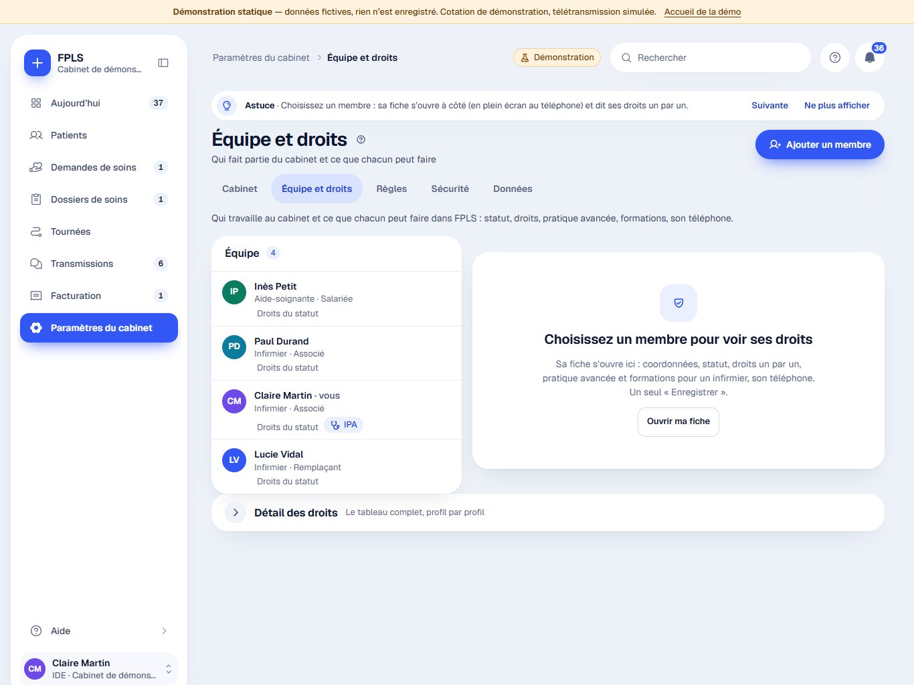
3. Déjà en cours de réalisation
Rien à choisir ici : la tournée, la dose d’insuline et le texte plus gros sont en train d’être codés d’après ces maquettes.
La tournée au téléphone
Le patient et son adresse d’abord, les deux boutons sous le pouce.
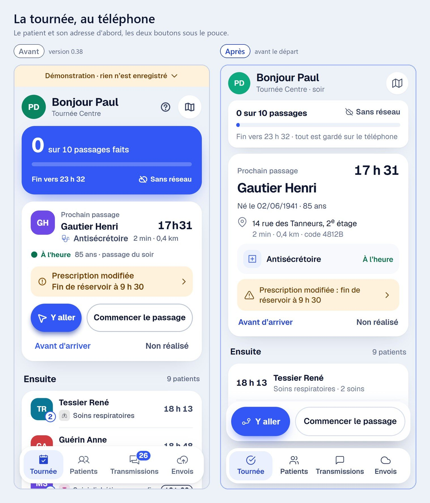
La dose d’insuline
« 14 unités » en grand dans la carte du bouton ; sous le seuil prescrit, un bloc rouge et la consigne du médecin.
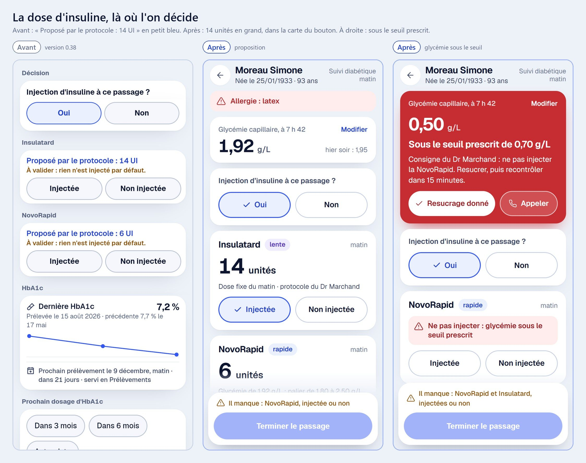
Le texte du poste, un cran plus gros
Captures réelles de la démo : texte à 14 avant, à 16 après.
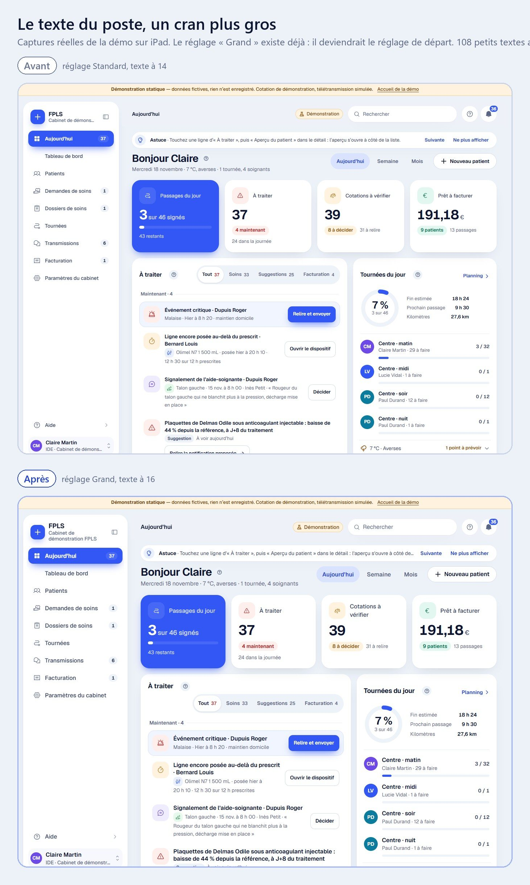
4. Prévus ensuite
Codés après tes choix ci-dessus, d’après ces maquettes. Dis-moi si l’une ne te plaît pas.
Le planning
Le trou dit en une phrase, la journée par heure, le calendrier en plus lisible.
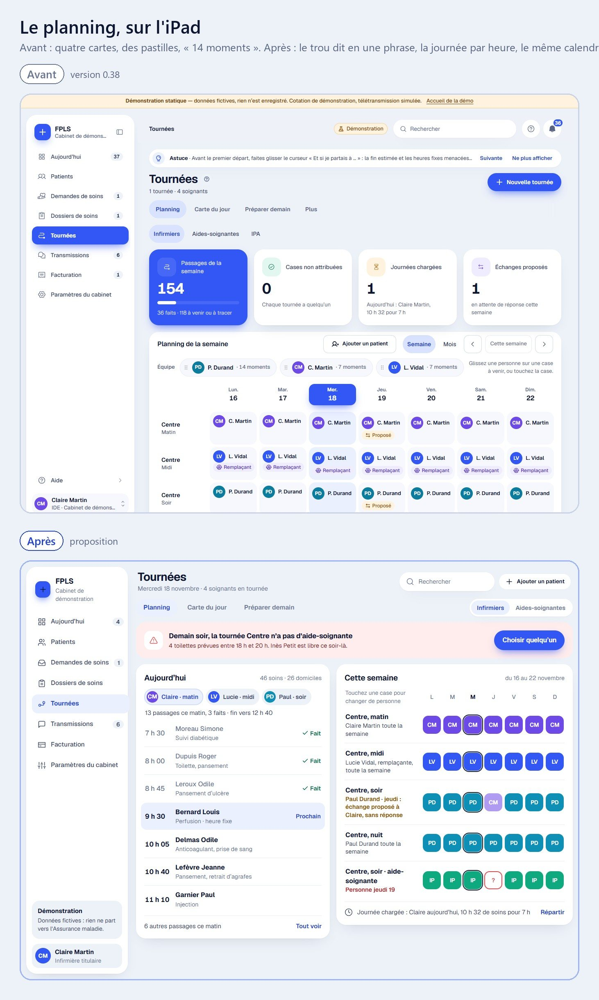
L’ordonnance
Des pastilles, rien de coché d’avance, et ce qui sera prévu dit en phrases.
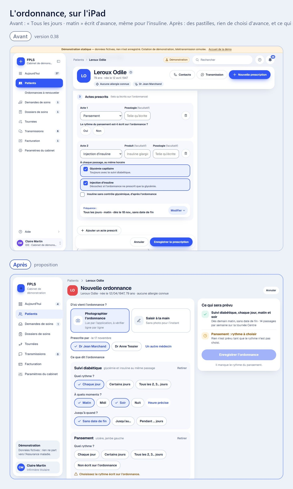
Créer un patient
Le nom d’abord, cinq réponses, un bouton.
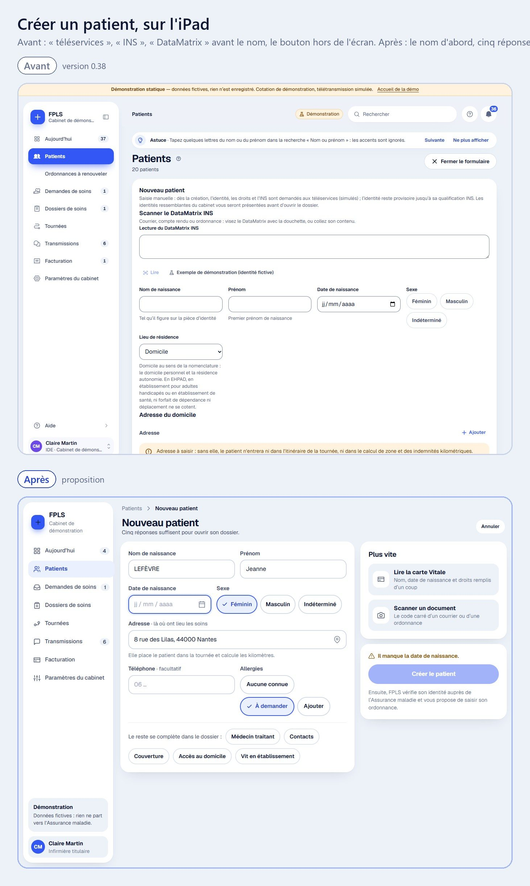